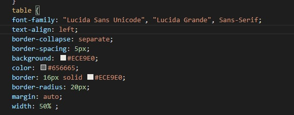
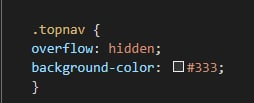

Селектор тегу

В качестве селектора может выступать любой тег HTML, для которого определяются правила форматирования, такие как: цвет, фон, размер и т. д
Вначале указывается имя тега, оформление которого будет переопределено, заглавными или строчными символами не имеет значения. Внутри фигурных скобок пишется стилевое свойство, а после двоеточия — его значение. Набор свойств разделяется между собой точкой с запятой и может располагаться как в одну строку, так и в несколько.
Селектор класу

В HTML документе, селекторы по CSS классу находят элементы с нужным классом. Атрибут класса определяется как разделённый пробелами список элементов, и один из этих пунктов должен точно соответствовать имени класса, приведённому в селекторе.